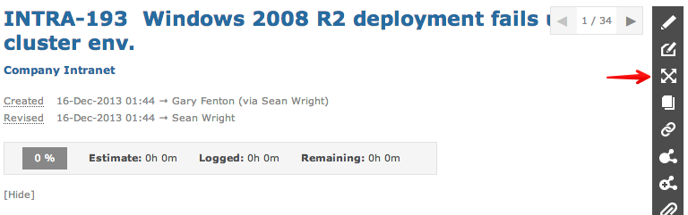
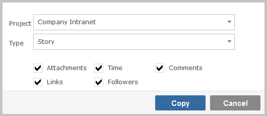
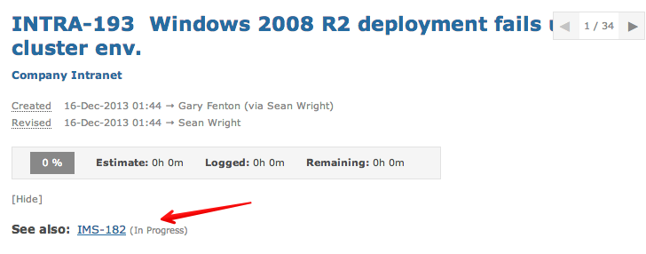

You can copy an item to create a duplicate. View an item and then click on the copy button.

You will then be prompted select your target project, item type and which other fields you wish to copy.

The duplicated item will have a link back to the original item.
